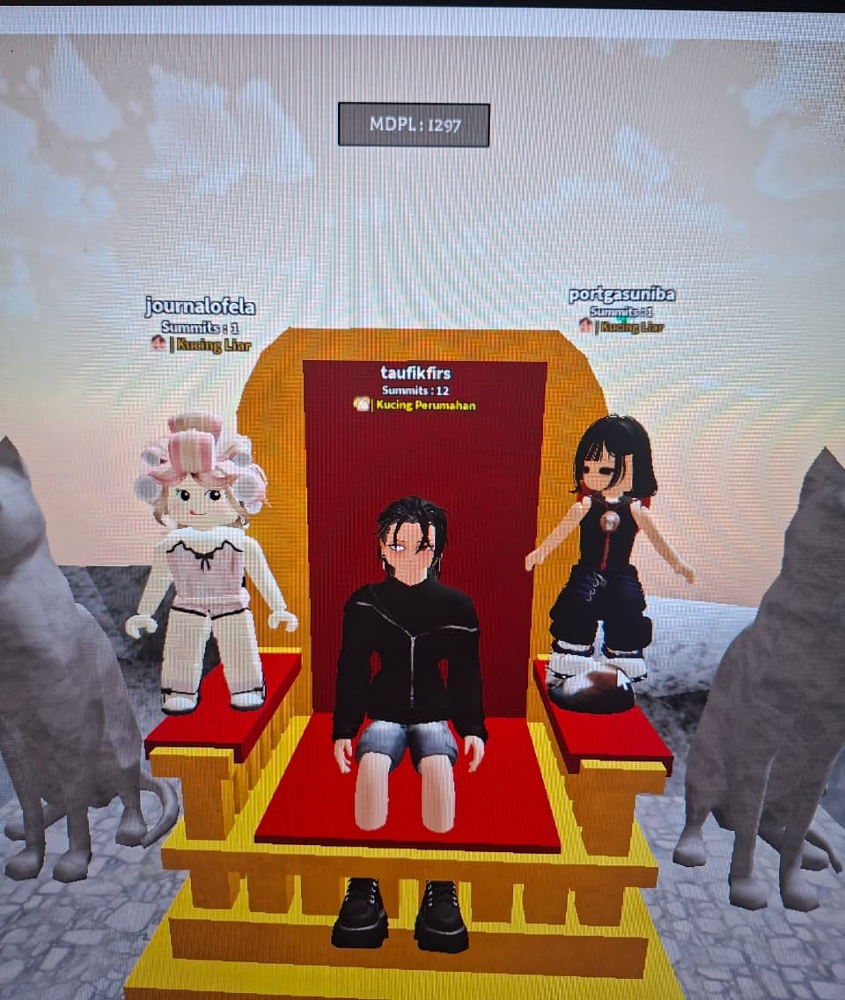

Ada sesuatu yang ingin aku tunjukkan
khusus untuk kamu.
Masukkan kode ajaib untuk membuka pesan ini
Sepertinya ada yang salah, coba ingat lagi ya ♡
Clue: Lorong waktu ini membutuhkan sandi kenangan agar bisa terbuka. Jika kamu mengingat di mana dan kapan mata (dan suara) kita pertama kali saling menemukan, kamu pasti tahu deretan angka apa yang kusembunyikan di sini.
Ada melodi yang sengaja kusiapkan untuk menemanimu di halaman ini.
Tolong pastikan perangkatmu tidak dalam mode bisu ya, Cantik.
Jika semua sudah siap, sentuh layar ini dan mari kita mulai menelusuri lorong waktu kita bersama.
✦Masukkan ID Lagu
~ Bukan itu kodemu ~
Kode rahasia untuk membuka musiknya ♡
Mari kita putar waktu sejenak ke tahun lalu, tepatnya pada tanggal 13 September 2025. Kala itu, hari-hariku berjalan seperti biasa. Pagi hingga petang kuhabiskan untuk bekerja, mencoba menyelesaikan segala tanggung jawab dengan tenang, meski tak jarang penat dan stres diam-diam menumpuk di pundak.
Hingga tibalah malam itu—sebuah malam Minggu. Untuk mengusir jenuh dan sunyi di tengah kota yang entah mengapa terasa asing ini, aku memutuskan untuk login ke Roblox. Aneh memang, di dunia nyata, berinteraksi dengan banyak orang karena urusan pekerjaan seringkali terasa begitu menguras energi. Namun, di dalam semesta game ini, segalanya terasa berbeda. Aku bisa menikmati pelarian sejenak, tertawa lepas, dan menyapa jiwa-jiwa baru tanpa beban.
Malam itu, langkah digitalku membawaku masuk ke sebuah map pendakian bernama Mount Kucing. Seperti biasa, aku bermain santai sambil sesekali membantu pemain lain yang kesusahan (ya, hitung-hitung karena aku memang jago saja, hehe). Namun, di tengah rute pendakian itu, pergerakanku terhenti. Aku melihat dua orang pemain yang tampak kebingungan dan kesulitan. Aku pun mendekat dan menawarkan bantuan. Siapa sangka, sapaan sederhana itu dibalas dengan obrolan yang begitu mengalir. Kesan pertamaku malam itu: kalian sangat asyik. Sampai-sampai, di sela-sela pendakian, aku sengaja menjahili kalian.
Masihkah kamu mengingatnya? Percayalah, di antara riuhnya orang-orang maya yang berlalu-lalang malam itu, ada daya tarik yang sangat berbeda saat aku menemukanmu. Entah apa namanya, aku pun tak punya kuasa untuk menjelaskannya. Ssstt... tolong jangan sebut aku berlebihan kali ini. Tapi sungguh, saat pertama kali mendengar suaramu—meski dengan segala kepolosanku yang tak tahu rupa aslimu, bahkan sempat ragu apakah kau dan Ela benar-benar perempuan di balik layar itu—ada benih rasa yang diam-diam mengambil tempat di hatiku. Mungkin, semua itu tumbuh sesederhana karena tawamu yang lepas, atau caramu membuat segalanya terasa jauh lebih hidup.
Menjelang puncak gunung maya tersebut, aku memberanikan diri untuk menawarkan pertemanan, dan betapa leganya aku saat kalian berdua menyambutnya dengan tangan terbuka. Lalu, tibalah kita di puncak Mount Kucing. Saat sesi perayaan itu, kalian berdua memintaku untuk ikut bergabung berfoto bersama.
Dan tahukah kamu? Kenangan itu masih kusimpan dengan rapi sampai detik ini. Sejujurnya agak memalukan untuk diakui, tapi waktu itu aku sama sekali tidak mengerti bagaimana cara mengambil screenshot langsung dari dalam game. Alhasil, dengan polosnya aku memotret layar monitorku menggunakan kamera HP, hahaha.
Kamu bisa melihat buktinya... foto penuh sejarah itu kusematkan tepat di halaman ini. Sungguh, sebuah pertemuan maya yang tak disengaja, namun menjadi awal dari kisah paling indah dalam hidupku.

Setelah pertemuan pertama di Mount Kucing itu, dengan segala kesopananmu, kamu mengajakku untuk kembali menjelajahi map-map yang lain. Kamu tidak pernah tahu betapa bahagianya aku kala itu. Sejujurnya, saat itu aku berteman dengan banyak orang di game hanya demi formalitas bermain dan mengobrol. Aku bahkan sering merasa segan untuk sekadar bergabung dengan mereka. Namun, segalanya mendadak berbeda jika itu kamu. Setiap kali kamu mengajakku, aku selalu menyambutnya dengan letup semangat yang tak bisa kusembunyikan.
Lembar cerita kita pun meluas. Kamu mengenalkanku pada teman-temanmu satu per satu; sejak saat itulah aku mulai mengenal Rereh dan Muffin. Hari-hari berlalu di bawah langit game yang sama, kita semakin sering menghabiskan waktu bertualang berdua setiap malam. Perlahan, malam hari menjelma menjadi waktu yang paling kutunggu-tunggu dalam hidupku—hanya demi bisa bermain bersamamu. Ketika suatu malam kamu berhalangan hadir atau memiliki kesibukan lain, ada secuil rasa sepi yang menyelinap di hatiku. Tapi tidak apa-apa, saat itu aku bahkan belum menyadari kalau benih perasaan ini akan tumbuh sebesar sekarang.
Banyak sekali memori jenaka yang terekam di sana. Ingatkah kamu saat aku mengajakmu dan Ela bermain di map gunung Indonesia, Mount Salak? Momen legendaris ketika Ela tiba-tiba terjatuh di jembatan. Karena saat itu aku mengambil role sebagai tim SAR, hanya aku yang bisa menyelamatkannya, ditonton oleh banyak orang yang ada di sana. Sungguh sebuah fragmen komedi yang mengocok perut kalau diingat-ingat kembali—anggap saja ini caraku menggoda Ela.
Canda tawa yang mengiringi setiap ketukan keyboard dan klik mouse kita malam itu justru membuatku semakin jatuh hati padamu. Semakin larut, obrolan kita pun semakin tidak karuan, hingga akhirnya kita menemukan lelucon internal yang tak terlupakan: “Sapi di Padang Rumput”.
Semua bermula dari senjata kunai yang dipegang oleh avatar Roblox-ku saat itu, yang menurutmu membuat gayaku mirip seperti sapi padang. Dengan keras kepala aku menyela, “Emang ada sapi padang?” Aku langsung mencarinya di Google dengan kata kunci itu. Ketika muncul foto seekor sapi Eropa di tengah padang rumput yang hijau, aku langsung mengirimkannya kepadamu dan Rereh sambil bertanya, “Ini sapi padang?” Kamu spontan menjawab, “Bukan!” lalu mengirimkan foto sapi padang yang sebenarnya. Saat kuteliti kembali dengan saksama, ternyata foto awal yang kukirimkan itu bertuliskan “Sapi di Padang Rumput”—aku membacanya terlalu cepat karena terburu-buru, hahaha. Kejadian konyol itu sukses membuat kita tertawa lepas, menjadi jokes internal kita, dan bahkan diabadikan menjadi nama grup Discord kita hingga hari ini.
Lalu, ada banyak momen lain saat aku sengaja mengajakmu bermain game horor. Jujur saja, itu hanyalah strategi kecilku agar bisa terus menghabiskan waktu bersamamu dan mendengarkan betapa lucunya suaramu ketika sedang ketakutan. Maafkan muslihat kecilku ini ya, Cantik. Belum lagi momen manis saat karakter kita saling meminta gendong di dalam game—sebuah interaksi sederhana yang sukses membuat hatiku berteriak kegirangan dan bibirku tersenyum sendiri di balik layar. Ssstt... aku tahu kamu pasti akan bilang ini lebay lagi. Stop deh, bodo amat, wleee... Momen-momen itulah yang kini menjadi hal paling sulit untuk dilupakan.
Kamu masih ingat jokes kita soal “Sapi di Padang”? Sekarang buktikan — temukan sapi yang bersembunyi di suatu tempat di dalam padang ini. Sentuh dia jika sudah ketemu!
🎉
Ketemu!
Selamat! Kamu menemukan Sapi di Padang Rumput.
(Bukan sapi padang ya!)
Hari demi hari berganti, lembar cerita kita pun berevolusi. Dari sekadar pesan singkat di dalam game, kita melangkah ke Discord. Aku mulai menjadi seseorang yang keras kepala, tanpa henti merajut obrolan denganmu—meski aku tahu betul, di awal kau mungkin membalas rentetan pesanku hanya sekadar bentuk kesopanan semata.
Kali ini, aku ingin jujur padamu tentang sebuah rahasia kecil. Ketika momen itu akhirnya tiba—hari di mana kita berencana untuk bertatap muka pertama kalinya dalam acara buka puasa bersama—sejujurnya situasi saat itu sama sekali tidak berpihak padaku. Secara realistis, aku belum bisa dan sangat tidak memungkinkan untuk pulang ke Samarinda lalu pergi ke Balikpapan demi bertemu dengan kalian di dunia nyata. Namun, aku memilih untuk menantang kemustahilan itu. Bagiku, hari itu adalah momentum krusial; sebuah langkah awal untuk membuktikan bahwa perasaanku padamu bukanlah sekadar bualan fiksi di balik layar kaca. Aku mengusahakan segalanya dengan segenap daya, hingga entah bagaimana keajaiban itu datang: cutiku disetujui. Aku bisa pulang, dan tentu saja, tujuan utamaku tak lain hanyalah untuk menemuimu.
Melihatmu secara langsung di tengah riuhnya tawa teman-teman yang lain... detik itu juga membungkam segala keraguanku. Mataku seolah hanya menemukan satu titik fokus: kamu. Walaupun, jika boleh jujur, di balik tatapan itu ada debar jantung yang tak karuan. Aku terlalu gugup untuk benar-benar menatap kedua matamu berlama-lama. Kalau kamu menyadarinya, mungkin kamu melihatku beberapa kali memalingkan wajah dengan canggung karena terlalu gugup, haha. Ternyata, menatap langsung mata seseorang yang kita suka adalah hal yang luar biasa sulit.
Tetapi ketahuilah, Cantik... di saat kamu sedang tertawa atau berpaling ke arah lain, aku sering kali mencuri waktu untuk menatapmu dalam diam. Dan pada detik-detik curi pandang dalam keheningan itulah, aku semakin yakin bahwa perasaanku padamu benar-benar nyata.
Foto ini adalah satu-satunya kepingan kenangan yang kumiliki dari hari itu. Sejujurnya, di lubuk hati terdalam, aku sangat ingin memiliki potret yang hanya berisi kita berdua. Namun, apa daya, rasaku kalah oleh gugup dan rasa segan pada yang lain.
Ingatkah kamu saat kita hendak berpisah di sekitar H&M? Indra sempat berbisik, seolah bisa membaca isi kepalaku, “Kamu nggak mau foto berdua?” Jawabku kala itu penuh keraguan yang menutupi gengsi, “Pengen sih... tapi yaudahlah, nanti saja.” Indra hanya menyela cepat, “Kapan lagi, bodoh.” Aku terdiam.
Dan benar saja, begitu malam merengkuh dan aku terdiam di kesunyian kamar hotel, penyesalan itu datang menyergap. Bayangan hari itu terus berputar, menghantuiku. Di tengah kecamuk pikiran, aku mengirimkan sebuah pesan padamu: “Kabari aku kalau sudah sampai dengan selamat, ya.”
Detik demi detik merayap, menit berganti jam, namun layar ponselku tetap membisu. Kegelisahan mulai menjalar dan menyelimuti rongga dada. Di dalam kepalaku yang bising, aku mulai menerka-nerka hal yang tidak-tidak. Apakah ada sikapku di pertemuan tatap muka pertama ini yang mengganggumu? Apakah ada yang salah dari diriku?
Hingga tiba-tiba, sebuah notifikasi memecah keheningan. Namun, bukan namamu yang muncul di layar, melainkan Rereh. Sebuah pesan yang membawa kabar duka yang begitu mengejutkan malam itu—ayahandanya telah berpulang. (Untuk detail haru yang satu ini, biarlah tidak kumasukkan ke dalam tulisan ini ya, hehe).
Tak lama berselang dari kabar itu, barulah pesan darimu akhirnya tiba. Dadaku yang sedari tadi sesak oleh rasa cemas perlahan mengembuskan napas lega. Ternyata, keterdiamanmu sama sekali bukan karena hal-hal buruk yang sempat kutakutkan di kepalaku, melainkan karena situasi duka tak terduga yang sedang menyelimuti malam itu.
Keesokan harinya, saat roda kendaraan membawaku melintasi jalan tol kembali pulang menuju Samarinda, hatiku lagi-lagi merutuki diri sendiri. Sambil menatap jalanan yang membentang, suara Indra seolah kembali terngiang, “Benar juga, kenapa aku tidak mengajakmu foto berdua semalam?” Penyesalan manis itu terasa begitu nyata, tertinggal sebagai jejak rindu di setiap kilometer yang kulewati.
Sejak perpisahan hari itu, komunikasi kita berlabuh di lembaran baru—obrolan panjang yang berpindah haluan ke WhatsApp. Sebuah ‘pertukaran’ manis yang sangat sepadan, dan biarlah itu menjadi rahasia kecil kita berdua (terutama jika kau masih ingat betul taktik seperti apa yang kugunakan demi bisa mendapatkan nomormu saat itu, hehe).
Waktu pun terus mengalir dengan lembut. Perlahan, kita mulai saling bertukar serpihan hari. Mengirimkan kabar, hingga bertukar PAP tentang hal-hal sederhana—entah itu aktivitas acak yang sedang dilakukan atau sekadar pamer menu makanan. Sederhana, tapi entah mengapa semuanya tampak begitu manis dan menggemaskan di mataku.
Kamu mulai terbuka. Kamu mulai menceritakan kepingan keseharianmu, hiruk-pikuk pekerjaanmu, hingga membagikan keluh kesah dan rasa lelahmu. Percayalah, meskipun kamu sedang mengeluh, selalu ada rasa hangat dan senyum yang diam-diam merekah di wajahku setiap kali melihat indikator “typing...” darimu muncul di layar.
Semakin hari, aku pun semakin berani melempar gombalan-gombalan absurd dan hal-hal aneh hanya demi bisa menghiburmu. Maaf ya kalau terkadang terasa aneh, tapi memang beginilah diriku yang suka sekali mengarang cerita. Tapi satu hal yang harus kamu pegang: dari semua hal yang suka kukarang, perasaanku kepadamu tidak pernah sedikit pun aku rekayasa. Kalau yang satu ini seratus persen realll, jyahhhh!
(Hehe, maaf, maaf... tolong berhenti bilang aku lebay di dalam kepalamu. Sudah berapa kali kata ‘lebay’ itu kau ucapkan dalam hati sejak awal membaca cerita ini? MALESIN BGTTTT...)
Sungguh, aku tidak pernah menyangka bahwa sosok di balik layar yang kutemui di dunia maya itu, kini telah berakar kuat menjadi seseorang yang begitu penting dalam setiap denyut nadiku. Sejak hari itu, perlahan namun pasti, kamu menyihir duniaku—mengubah percakapan biasa dan hal-hal sederhana menjadi sesuatu yang jauh lebih indah dari cerita fiksi mana pun.
1. Magnet Sebuah Kedewasaan
2. Melodi dalam Suaramu
3. Sebuah Fakta Bernama Keindahan
4. Harap di Balik Konyolku
5. Ruang Kosong untukmu
Jika kamu bertanya mengapa kamu begitu istimewa di mataku, jawabannya kutemukan pada caramu memandang dunia. Aku melihat sosok seorang kakak yang begitu hangat, mengayomi, dan penuh kasih terhadap adik-adiknya. Sebuah pemandangan yang begitu meneduhkan hati, sangat kontras—namun entah bagaimana justru melengkapi—diriku, si anak bungsu yang mungkin seringkali bertingkah nakal dan keras kepala ini.
Lalu, ada suaramu. Entah magis apa yang bersembunyi di balik setiap nada bicaramu, namun ia selalu berhasil menawanku. Cerita-cerita yang mengalir dari bibirmu adalah candu yang tak pernah gagal membuatku terhanyut. Jika aku diberi pilihan, aku rela menghabiskan waktu berjam-jam, bahkan seharian penuh, hanya untuk duduk diam dan mendengarkanmu bercerita tentang apa saja berulang kali.
Dan tentu saja... karena kamu begitu cantik. Aku selalu mengagumi hal-hal indah yang diciptakan di dunia ini, dan kamu adalah salah satunya. Jika pujian ini membuatmu tersenyum bangga atau sedikit besar kepala, kali ini aku akan membiarkannya. Lagipula, tak ada yang salah dengan mengakui sebuah kenyataan, bukan?
Sampai detik ini, aku tidak pernah benar-benar tahu bagaimana tepatnya kamu memandangku. Aku hanya bisa merapalkan harap, semoga kepingan kenangan dan kesan yang kau simpan tentangku adalah hal-hal yang baik. Meskipun aku sadar sepenuhnya, terkadang tingkahku mungkin sedikit di luar nalar dan terkesan ‘gila’ di matamu.
Jika aku harus menuliskan semua alasan mengapa kamu istimewa, kurasa bab ini tidak akan pernah ada ujungnya. Jemariku sudah terlalu lelah untuk merangkai setiap pesonamu ke dalam kata-kata. Jadi, untuk segala hal manis yang belum sempat kutulis di sini... kupercayakan padamu, Cantik. Biar sisa ruang kosong dari halaman ini, kamu sendiri yang melengkapinya dengan senyummu.
Dari semua bait dan cerita yang telah kau baca sejak awal, sejujurnya, babak inilah yang paling membuat debar di dadaku tak karuan. Setelah sekian lama waktu merajut kedekatan kita, aku sempat terdiam dan bertanya-tanya pada diriku sendiri: Apakah perasaan ini sekadar euforia sesaat yang nanti akan menguap begitu saja, ataukah ini benar-benar sesuatu yang bernama cinta?
Aku sadar, hanya waktu yang memiliki jawaban paling jujur. Aku meyakini satu hal; jika ini hanyalah ketertarikan biasa, mungkin pada bulan kedua sejak kita pertama kali saling menemukan pada bulan september tahun lalu semuanya sudah terasa hambar dan membosankan. Namun, semesta membuktikan sebaliknya. Nyatanya, rasa itu tidak pernah pudar.
Hingga detik ini, ketika kalimat ini kutulis, perasaanku masih utuh, berlabuh pada debar yang sama, dan bermuara pada orang yang sama.
Jadi, setelah semua perjalanan panjang yang kita lewati, di ujung cerita ini aku ingin bertanya satu hal padamu...
Terima kasih telah menjawab “iya”, Cantik. Terima kasih karena telah bersedia membuka pintu kehidupanmu dan menerima sosok yang mungkin sedikit ‘gila’ ini untuk masuk serta menetap di dalamnya. Doaku sederhana, semoga semesta selalu memihak pada kita, melimpahkan segala hal baik untuk mengiringi langkah kita ke depannya.
Aku tahu betul, mencintai dari kejauhan—berada dalam ruang lingkup LDR—bukanlah hal yang mudah dan seringkali terasa sangat menyebalkan. Aku mengakui itu tanpa ragu. Namun, biar kuucapkan janji ini di hadapanmu: terlepas dari seberapa jauh bentang jarak kita, dan di antara banyaknya wanita di luar sana, aku memastikan bahwa kompas hatiku dan pandanganku hanya akan terkunci padamu, Nabila Aisyah.
Sekali lagi, terima kasih karena telah bersedia menjadi bagian paling magis dalam naskah ceritaku. Tulisan ini adalah bab terakhir yang kutulis tentang bagaimana kita saling menemukan. Apakah akan ada bab-bab baru yang menceritakan petualangan kita selanjutnya? Biar waktu yang merangkainya. Aku hanya berharap, kumpulan kata ini mampu meninggalkan jejak kesan yang paling indah di hatimu.
Oh ya, sebelum aku benar-benar menutup buku ini... kurasa ada satu hal yang harus disesuaikan. Boleh, kan, kalau sekarang aku memanggilmu... Sa...yang? Tentu saja boleh, mengingat sekarang kamu sudah resmi jadi pacarku, hehehe.
— untukmu seorang, Nabila Aisyah ✨